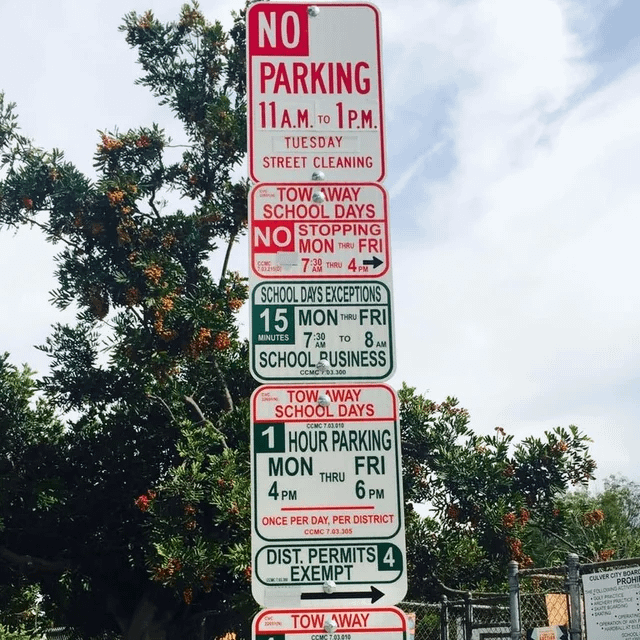

Source: r/ChatGPT, "What's one thing you use ChatGPT for that sounds ridiculous, until people actually try it?" Read 2026-11-04 (about 480 comments at the time). No vote counts then, so grouped by theme, not ranked. agent marks items that want a scheduled or tool-connected agent rather than a one-off chat.
Click an idea to expand the original comment(s). Text and images were copied here on 2026-11-07 so the page doesn't depend on Reddit. Each expanded comment links back to its source.
Meta-prompt
Ask: what annoying task am I doing manually that involves looking, comparing, organising, remembering, researching, converting or deciding? Hand that over.
Useful things to use ChatGPT for
The best uses of ChatGPT are often not clever questions. They involve giving it messy real-world information such as photos, files, transcripts, inventories, preferences or constraints and asking it to turn them into something useful.
High-value uses
- Find things in photos
- Photograph a room, carpet, drawer or workbench and ask ChatGPT to locate a small object, cable, screw or component
- Turn photos into inventories
- Photograph bookshelves, boxes, tools, cables, DVDs or collections
- Create an alphabetised inventory with shelf, box or position numbers
- Identify mystery objects
- Upload a photo of an unknown cable, connector, electronic component, car part or tool
- Ask what it probably is, what it does and how to identify the exact model
- Use ChatGPT as a project brain
- Keep decisions, requirements, problems and previous attempts together
- Ask:
- What remains unresolved?
- What did we decide about X?
- What assumptions are we making?
- Does this new change conflict with anything earlier?
- Pressure-test your thinking
- Ask ChatGPT to disagree rather than validate you
- Useful prompts:
- "Argue the strongest case against this"
- "What am I overlooking?"
- "Assume this fails in six months. Why?"
- "Separate facts, assumptions and guesses"
- Turn meetings into useful records
- Give ChatGPT a transcript and extract:
- decisions
- actions
- owners
- deadlines
- unresolved questions
- important requirements
- Rehearse difficult conversations
- Job interviews
- Performance discussions
- Salary negotiations
- Presentations
- Support escalations
- Ask ChatGPT to role-play the other person and evaluate you afterwards
- Create a personalised tutor
- Upload manuals, papers, books or course material
- Ask ChatGPT to quiz you, explain weak areas, create scenarios or simulate an oral exam
- Make manuals interactive
- Upload technical documentation and ask practical questions while working
- Example: "What should I check next for this error?"
-
Find existing tools before building your own
- Describe an annoying workflow and ask:
- "Does software already solve this?"
- "Find open-source or self-hosted options first"
- "Should I automate this or build something myself?"
Visual and physical-world uses
-
Plan rooms and spaces
- Upload photos of a room, office, garden or storage area
- Ask for better layouts under specific constraints
-
Garden and plant help
- Identify likely plants
- Get advice on pruning, watering or positioning
- Treat identification as uncertain where safety matters
-
Read handwriting and old documents
- Transcribe difficult handwriting
- Explain old terminology or unclear passages
-
Photography assistant
- Tell ChatGPT what camera gear you own
- Ask what to take for a specific shoot and what settings to start with
-
Help design replacement parts
- Provide photos and measurements for broken components
- Get help thinking through CAD dimensions or 3D-printing approaches
- Verify anything safety-critical independently
Travel
-
Build custom maps
- Give ChatGPT an itinerary and places of interest
- Group locations geographically and generate map-ready data such as KML
-
Optimise routes
- "I have six hours, start here and finish here"
- "Minimise backtracking"
- "Prioritise these places"
- "Fit lunch somewhere sensible"
-
Create themed trips
- Film locations
- History
- Architecture
- Games
- Books
- Photography
Buying and decisions
- Analyse expensive purchases
- Cars
- Electronics
- Property
- Appliances
- Insurance
- Subscriptions
- Upload quotes, listings or reports and ask for red flags, hidden costs and alternatives
-
Compare offers properly
- Normalise several proposals by:
- price
- recurring cost
- guarantees
- exclusions
- contractual risk
- hidden assumptions
-
Help sell things
- Upload photos of an item
- Ask what it is, approximate value, missing listing information and what photos buyers need
-
Build a preference model
- Give examples of things you love, like, dislike and avoid
- Have ChatGPT infer what characteristics drive your preferences
- Useful for games, films, books, restaurants, technology and travel
Everyday optimisation
-
Meal planning
- Tell ChatGPT what food you already have, what needs using, your budget and available time
- Get a meal plan, shopping list and preparation order
-
Adapt recipes
- Scale portions
- Convert cups to grams
- Substitute ingredients
- Create cooking timelines
-
Prioritise cleaning or maintenance
- Show the current state and say how much time you have
- Ask what will make the biggest difference first
-
Analyse journals or old notes
- Look for recurring problems, patterns, improvements or contradictions between intentions and behaviour
-
Recover things you barely remember
- Give every fragment you remember about an old video, game, film, website, product or person
- Generate candidates, then verify them through web search
-
Translate things around you
- Signs
- Menus
- Screenshots
- Documents
- Audio
- Messages
-
Build small custom tools
- Describe a workflow that existing software handles badly
- Ask ChatGPT to design or help build a small utility specifically for it
-
Monitor things instead of repeatedly checking
- Prices
- Product availability
- Software releases
- Weather
- News
- Deadlines
- Replies you are waiting for
- Especially useful when you only need to know if something changes
Where not to trust it blindly
- Major financial, tax, legal or medical decisions
- Diagnosing health problems from photos
- Determining legality or safety from an image alone
- Safety-critical engineering designs
- Current software, product or game information without verification
- Any situation where missing information could cause ChatGPT to invent an answer
Use ChatGPT primarily for analysis, organisation, research, comparison and decision support, not as an unquestionable authority.
A useful way to think about it
Instead of asking:
"What question can I ask ChatGPT?"
Ask:
"What annoying mental task am I doing manually that involves looking, comparing, organising, remembering, researching, converting or deciding?"
Then see how much of that task ChatGPT can take over.
A particularly useful prompt is:
"Here is what I'm trying to achieve and everything I currently know. Identify which parts you can take off my hands, which parts can be automated, which need external verification, and which decisions should remain mine."
Also: "Here is what I'm trying to achieve and everything I know. Which parts can you take off my hands, which can be automated, which need external verification, and which decisions stay mine?"
Useful things to use ChatGPT for
The best uses of ChatGPT are often not clever questions. They involve giving it messy real-world information such as photos, files, transcripts, inventories, preferences or constraints and asking it to turn them into something useful.
High-value uses
- Find things in photos
- Photograph a room, carpet, drawer or workbench and ask ChatGPT to locate a small object, cable, screw or component
- Turn photos into inventories
- Photograph bookshelves, boxes, tools, cables, DVDs or collections
- Create an alphabetised inventory with shelf, box or position numbers
- Identify mystery objects
- Upload a photo of an unknown cable, connector, electronic component, car part or tool
- Ask what it probably is, what it does and how to identify the exact model
- Use ChatGPT as a project brain
- Keep decisions, requirements, problems and previous attempts together
- Ask:
- What remains unresolved?
- What did we decide about X?
- What assumptions are we making?
- Does this new change conflict with anything earlier?
- Pressure-test your thinking
- Ask ChatGPT to disagree rather than validate you
- Useful prompts:
- "Argue the strongest case against this"
- "What am I overlooking?"
- "Assume this fails in six months. Why?"
- "Separate facts, assumptions and guesses"
- Turn meetings into useful records
- Give ChatGPT a transcript and extract:
- decisions
- actions
- owners
- deadlines
- unresolved questions
- important requirements
- Rehearse difficult conversations
- Job interviews
- Performance discussions
- Salary negotiations
- Presentations
- Support escalations
- Ask ChatGPT to role-play the other person and evaluate you afterwards
- Create a personalised tutor
- Upload manuals, papers, books or course material
- Ask ChatGPT to quiz you, explain weak areas, create scenarios or simulate an oral exam
- Make manuals interactive
- Upload technical documentation and ask practical questions while working
- Example: "What should I check next for this error?"
-
Find existing tools before building your own
- Describe an annoying workflow and ask:
- "Does software already solve this?"
- "Find open-source or self-hosted options first"
- "Should I automate this or build something myself?"
Visual and physical-world uses
-
Plan rooms and spaces
- Upload photos of a room, office, garden or storage area
- Ask for better layouts under specific constraints
-
Garden and plant help
- Identify likely plants
- Get advice on pruning, watering or positioning
- Treat identification as uncertain where safety matters
-
Read handwriting and old documents
- Transcribe difficult handwriting
- Explain old terminology or unclear passages
-
Photography assistant
- Tell ChatGPT what camera gear you own
- Ask what to take for a specific shoot and what settings to start with
-
Help design replacement parts
- Provide photos and measurements for broken components
- Get help thinking through CAD dimensions or 3D-printing approaches
- Verify anything safety-critical independently
Travel
-
Build custom maps
- Give ChatGPT an itinerary and places of interest
- Group locations geographically and generate map-ready data such as KML
-
Optimise routes
- "I have six hours, start here and finish here"
- "Minimise backtracking"
- "Prioritise these places"
- "Fit lunch somewhere sensible"
-
Create themed trips
- Film locations
- History
- Architecture
- Games
- Books
- Photography
Buying and decisions
- Analyse expensive purchases
- Cars
- Electronics
- Property
- Appliances
- Insurance
- Subscriptions
- Upload quotes, listings or reports and ask for red flags, hidden costs and alternatives
-
Compare offers properly
- Normalise several proposals by:
- price
- recurring cost
- guarantees
- exclusions
- contractual risk
- hidden assumptions
-
Help sell things
- Upload photos of an item
- Ask what it is, approximate value, missing listing information and what photos buyers need
-
Build a preference model
- Give examples of things you love, like, dislike and avoid
- Have ChatGPT infer what characteristics drive your preferences
- Useful for games, films, books, restaurants, technology and travel
Everyday optimisation
-
Meal planning
- Tell ChatGPT what food you already have, what needs using, your budget and available time
- Get a meal plan, shopping list and preparation order
-
Adapt recipes
- Scale portions
- Convert cups to grams
- Substitute ingredients
- Create cooking timelines
-
Prioritise cleaning or maintenance
- Show the current state and say how much time you have
- Ask what will make the biggest difference first
-
Analyse journals or old notes
- Look for recurring problems, patterns, improvements or contradictions between intentions and behaviour
-
Recover things you barely remember
- Give every fragment you remember about an old video, game, film, website, product or person
- Generate candidates, then verify them through web search
-
Translate things around you
- Signs
- Menus
- Screenshots
- Documents
- Audio
- Messages
-
Build small custom tools
- Describe a workflow that existing software handles badly
- Ask ChatGPT to design or help build a small utility specifically for it
-
Monitor things instead of repeatedly checking
- Prices
- Product availability
- Software releases
- Weather
- News
- Deadlines
- Replies you are waiting for
- Especially useful when you only need to know if something changes
Where not to trust it blindly
- Major financial, tax, legal or medical decisions
- Diagnosing health problems from photos
- Determining legality or safety from an image alone
- Safety-critical engineering designs
- Current software, product or game information without verification
- Any situation where missing information could cause ChatGPT to invent an answer
Use ChatGPT primarily for analysis, organisation, research, comparison and decision support, not as an unquestionable authority.
A useful way to think about it
Instead of asking:
"What question can I ask ChatGPT?"
Ask:
"What annoying mental task am I doing manually that involves looking, comparing, organising, remembering, researching, converting or deciding?"
Then see how much of that task ChatGPT can take over.
A particularly useful prompt is:
"Here is what I'm trying to achieve and everything I currently know. Identify which parts you can take off my hands, which parts can be automated, which need external verification, and which decisions should remain mine."
Monitoring and scheduled agents
Hourly news scan of approved sources, filtered to "does this materially affect me," tuned by feedback over weeks agent
I have a task that every hour, it searches AP, Reuters, CSPAN, local news, and approved news sites.
I told it to update me any hou with something that impacts me. After a lot of trial and error, I’m getting 2-5 random GPT messages about immediate new stories around the world or in my backyard.
Sometimes I don’t get a message in a day, sometimes 8. It’s nice to feel the heartbeat of what’s going on without having the wild propaganda of the main stream media.
You have to make it yourself. Everyone has a different level of what they want to hear, how terrible, or what field (science, technology, business, etc).
For example, I had to tell it to chill on an earthquake that killed two, it was sad, but I got 2 updates and it was on the other side of the earth. I told the task prompt that and to analyze if it was objectively or materially important to me and my interests. I also always use SOL max and that’s allowed it to actually reformat the task the best way.
Weekly digest of journal articles in your field. Rule: second source for anything from Wikipedia or Reddit agent
Thank you so much. I made a prompt for weekly updates on relevant medical news for my area of expertise and it did not disappoint at all.
That’s awesome! Make sure you tell it to only use approved sources, medical journals, and the like. I’ve also told it if it finds something on a risky site (Wikipedia, Reddit, Facebook, etc) to find a further source backing it. Also having it run a QC on advanced projects has caught so many errors, it’s insane it’s not apart of OpenAIs master prompt.
Daily research page on a slow-moving topic (tiny-home zoning) with "read" and "not interested" buttons steering future pulls agent
Currently with the new sites option and desktop I am working on a research project for myself.
I am looking to move into a tiny home within the next year, selling my current home and downsizing. I am using it right now to check the rules, laws, regulations, in Ontario and municipalities. As this is a new kind of housing thing, a lot of municipalities and towns don’t know how to allow them, so they have banned them in the past. However, that is all changing and I’m hoping to find a location either near me somewhere or am I ready to move out of province?
So I chatted with ChatGPT, told her what I was looking for and what I was thinking of, and she created a site for me. We then had a conversation back-and-forth about other things that I should be looking at, and she also helped pinpoint a size location, types of housing that kind of thing.
It checks on it every single day and gives me more information. I have programmed it that I can click on a button saying that I read the article that was listed on my site or that I wasn’t interested in that kind of conversation so not to go grab it again.
This is the first one I’ve done, and I’m so excited to bring it into my life on other projects.
The site took about 15 minutes to pop up after telling her what I wanted.
Daily price watch on consumables, tied to a maintenance hub that forecasts when you'll need them agent
Well, im excited about this but its not for everyone, but maybe you can change it up for your purposes.
I race bikes. sport bikes, dirt bikes, and mountainbikes. I also work 60 hours a week. everyweekend has something, and I wanted to make my planning easier. No rush. No surprises. thats the goal.
So..I made a hub for all my bikes.
Service intervals, maintenance, part numbers for consumables, todo lists, mods/upgrades, ride reports, searching for parts, storing pictures etc.
It tracks rides (when I tell it) and updates a maintenance plan. Im able to forecast what I need (replacement parts, maintenance checks) early so I can order it cheaper (not last minute).
I can have todo lists for all bikes broken down into repair time or cost so I can pick one to do that day.
I have all my race organizers loaded in there and it will tell me if they scheduled another trackday or something.
I have it combing the internet daily for sales on tires, oil, and various other parts that I will always be needing.
It also tracks maintenance on my toyhauler and truck, because, why not.
Also, I load my ride info (onx or racebox) and it analyzes it and tells me where I can be faster (havent tried this yet but its ready for the next trackday). It will analyze my tire wear too.
Also, searchable ride logs with suspension settings and remarks and such.
Basically...its a one stop shop for my bikes. At first it was only in the chat but this week I learned how to use github and vercel. Eventually ill add cloud storage and have my service manuals in there too.
Watch event organizers' sites for newly posted dates agent
Well, im excited about this but its not for everyone, but maybe you can change it up for your purposes.
I race bikes. sport bikes, dirt bikes, and mountainbikes. I also work 60 hours a week. everyweekend has something, and I wanted to make my planning easier. No rush. No surprises. thats the goal.
So..I made a hub for all my bikes.
Service intervals, maintenance, part numbers for consumables, todo lists, mods/upgrades, ride reports, searching for parts, storing pictures etc.
It tracks rides (when I tell it) and updates a maintenance plan. Im able to forecast what I need (replacement parts, maintenance checks) early so I can order it cheaper (not last minute).
I can have todo lists for all bikes broken down into repair time or cost so I can pick one to do that day.
I have all my race organizers loaded in there and it will tell me if they scheduled another trackday or something.
I have it combing the internet daily for sales on tires, oil, and various other parts that I will always be needing.
It also tracks maintenance on my toyhauler and truck, because, why not.
Also, I load my ride info (onx or racebox) and it analyzes it and tells me where I can be faster (havent tried this yet but its ready for the next trackday). It will analyze my tire wear too.
Also, searchable ride logs with suspension settings and remarks and such.
Basically...its a one stop shop for my bikes. At first it was only in the chat but this week I learned how to use github and vercel. Eventually ill add cloud storage and have my service manuals in there too.
Scheduled harvest of a subreddit for new use-case ideas agent
This is a long post. I had ChatGPT make a short easy to read list of all the suggestions in here.
In fact, I might set up a scheduled task to harvest this sub for new ideas outside the obvious use cases.
Garden watering schedule by weather
I keep a garden and ChatGPT tells me what days to water
Vision: what is this, where is it
Photo of a patterned carpet to find a dropped screw. Also a blown LED in a strip
I lost a small screw on a busy patterned carpet. I uploaded a photo of the carpet, and chatgpt found the screw for me.
Done something similar trying to find a blown LED chip in a row them
Photo of a store shelf: where's the caulk, the vitamin, the gluten-free bars, the pod compatible with this espresso machine
Same department. I was looking for a special kind of caulking at the hardware store. I took 3 pictures spanning the entire shelf and gpt found it out of hundreds of options.
I have a similar story. I was looking for a vitamin and the grocery store had a huge wall of small similar looking bottles with not a great organization. I took a picture and asked where the vitamins were and it directed me right to it
Huge section of power bars at HEB grocery stores. I’m allergic to gluten and dairy. I uploaded a photo of the section and it picked out the bars I could eat! Hard part was finding that power bar in the haystack of choices!
I took a picture of the nespresso like machine at our AirBnB and then another one at the ten meter wide espresso pod shelf at the store in Palermo, and asked ChatGPT which one was compatible. I would never in a million years have figured it out myself.
Identify a mystery part, bulb, or glovebox object. Find the replacement on eBay from a serial-number photo
It was able to identify a part found in the glovebox of our new car. Google was useless with the task. The part in question was a hole cover that is removed when you get a package upgrade that has led light bars.
My husband needed a new small bulb for a lamp but we didn’t have a clue what it was called. So I took a photo of the old one and asked GPT. It was spot on.
How on earth did it find a screw in a carpet
My refrigerator door broke, so I took a picture of the serial number, and it was able to locate the handle for my refrigerator on eBay.
Count items in a pile to catch a short delivery
I was checking a vendor's work progress for my Anchor Bolt order. I ordered 450 pcs. The vendor said it's ready and told me to get it at their factory.
I went, took a pic of the Anchor Bolt stack and used chatgpt to count/estimate how many there are. It said there were only 250-ish.
I asked and forced the vendor to count again (in front of me) before they pack it up. There were only 252 pcs.
Fuck scammy vendors.
Parking sign plus current time, with local regulations looked up

"It's 3.50pm on a Tuesday. Can I park here?"
Used it during holidays to find the scenic routes. Went to Bilbao and ask to create whatever route, as long as I would pass Guggenheim from all four sides. Would not be able to do that in Google Maps myself, but it came up with further suggestions and export to Google Maps. Also, I asked, based on a picture, whether I could park there. It found local regulation, explaining that the area is for residents only, except of August.
Locate where a photo was taken via Street View for an insurance report
I had a car accident in the middle of nowhere in Poland. In the heat of it all I never noted where it took place. But I had a photo of the car with a house behind it.
I gave ChatGPT the image and told it to use google street view to find the house. After 2 hours of using „work“ it found the house (even though it had been painted since the latest street view image.)
and I was able to fill the insurance report.
Read medicine labels and foreign food wrappers aloud
My eyes aren't what they used to be, so I have it read ane explain labels/instructions on cold meds, laundry/cleaning supplies, beauty products, microwave dinners, etc
I buy a lot of food from stores where I don’t speak or read the language so I use it to read the wrappers.
Inventory and cataloguing
Bookshelf, DVD, or CD-spine photo to a sorted list with row and position. Match against a wishlist, or pick one based on known taste
HA! I have been using ChatGPT for about a year after it was available. Fell in love with the myriad of ways that it could help me. Have used it to create SO much great stuff.
THIS example is quite amazing. I don't know that I would've that of that, but; brilliant.
...
Along this vein, I have taken a picture of a whole bookshelf of DVDs at a 2nd hand store, and asked ChatGPT to put all the names into a list, bulleted and sorted by genre, then, to "name" them by Row (given some other contextual instructions (top Row - row1, row beneath that is row2, etc), and to "number" each DVD, for easy finding. Was walking out the door with the DVD I wanted less than 120 seconds later, with no searching stress.
I collect cds - I go to thrift shops and take photos of the spines and get ChatGPT to find the gems for me.
I have a list of books that I want for my collection. I fed the list to ChatGPT, then when I go to second hand book shops I take photos of the shelves and chat tells me whether any of the books I want are there.
I only had a few minutes to choose a book at a second-hand store, and there was a bookcase with hundreds of titles. I took a picture of it, asked "Based on what you know about the books I like, recommend one of these titles, and tell me where on this bookcase it is."
It gave a pretty good recommendation, and seemed to accurately parse and analyse all the titles.
Photo of a packed box to an alphabetized label
It's great if you ever legitimately organize your house.
Simply put the stuff into the box that you want, take a picture of the stuff in the box, have ChatGPT spit out the alphabetized list of what is in the box, print the list and put it on the front of the box. Done.
Whiteboard list to spreadsheet. Books to a Notion database with covers and page counts
I did this with a house supply list I sloppily wrote on a whiteboard and was too lazy to make a google sheet out of myself.
Taking a picture of all my books on the shelves in my house and in book stacks on the floor and then using that picture to create a Notion book database. Also fetched cover images from Amazon, page counts and author. Worked incredibly well!
Card collection CSV to deck suggestions
I upload a CSV file of all of my Magic: The Gathering cards and it helps me craft decks/points out cards I may have missed in my own collection.
Photo of a schedule to an .ics file. Pasted dates to calendar links (agent if connected)
I asked ChatGPT to translate a pohto of a schedule into an .ics file and uploaded it into my Google Calendar.
I copy paste bunch of dates and ask chat to create Google Calendar links, very helpful
Makeup inventory to a daily random "use these" combo
Its pretty girly. But I have way too much makeup. So I read it all off, had it put it into a spreadsheet and then tell it to give me a random face of compatible products when I'm ready to do my makeup. So I start using more of my things.
Home, repair, DIY
Appliance troubleshooting from photos. Unknown Airbnb oven: identify model, fetch manual, summarize
My smart TV started having trouble connecting to my Wi-Fi all of a sudden. ChatGPT helped me troubleshoot the issue and showed me how to fix it.
I thought I was having an issue with my washing machine. I ran it through ChatGPT, and it turned out to be OK. Saved me money from calling in a repairman.
But the biggest one was when I moved out of my last rental; the real estate agent and landlord tried to hit me with the cost of fixing mould, claiming I caused it, when it was a building issue (dampness). I took it to ChatGPT, which acted like a solicitor for me. It examined my evidence, their evidence, and all communications between us. It constructed emails for me to send to various parties, and developed a strategy for me. On the day of my hearing, I used ChatGPT to help me answer questions. Guess what... I won. I would never have achieved that on my own.
We rented an Airbnb at Christmas and couldn’t work the oven. Uploaded a photo and GPT figured out the model of oven, down loaded the instruction manual and summaries the parts of it I was asking about.
Snowblower or washer repair walkthrough with part links
I’ve used it for a few things in this category I believe. First, it helped me tune and repair an expensive snowblower I got off marketplace for cheap. Walked me through everything, even replacing the carburetor with links to eBay of what exactly to buy
Second, I’ll be starting a new job in a few months that is completely different than what I currently do. I’m using chat to build a lesson plan to help me transition into and learn the company and job before hand. It’s giving me like 15 different modules to study and knowledge checks here and there. Definitely taking the stress away from going into a different career field
I fixed my washer for $60. I am NOT a DIY kind of gal at all, but I really couldn’t image spending big on a repair in this economy. Chat GPT walked me through the entire process.
3D-print a replacement part from a drawing plus caliper measurements, or STL from a photo. Heightmaps to STL for CNC
I was trying to find a plastic part for an ag spray rig, spent two days calling around for it. Finally said F it, I’m going to try and make it myself on the 3D printer. I found a decent drawing of the part online with a few measurements included. I uploaded that and then Chaty-G told me all of the other measurements it wanted. I used my caliper and input those precise measurements. Chaty-G game me a print ready file for the part, and then told me all of the printer settings. Printed the part and it worked perfect. It was a fairly complex part. Flanged cylinder with o-ring seats on both ends.Amazing!
I use it to generate 3D print files (stl or 3mf). You can just take a picture of something, tell it what you’ll use it for (so it knows the ideal material and where it needs to be strongest), and it will do the 3D modeling, optimize the print settings, and give you a file. Works surprisingly well.
I make heightmaps and then used a chat gpt created webpage to transfer them to STL files for cnc and 3d printing my own designs.
Room renovation renders from four wall photos plus a priced shopping list
Interior/exterior home renovation ideas. Snap pics of the four walls of a room, or the four sides of your house and upload with a prompt containing basic dimensions, finishes, colors, priorities etc. and it will render surprisingly tasteful options to choose from.
Then ask it to generate a shopping list for the renovation from your local Lowe's (or whatever large chain you have), even specifying brands, finishes, paint colors, etc. and while I doubt it's 100% on spot and I've never gone further than the design idea phase, anyone with basic building knowledge can see it's a very solid starting point. It includes current pricing in its response to give you an idea of project cost.
It does this capably with the free version, btw...
Where to hang a piece, how much string light a tree needs, which shed fits these items (diagrammed)
I have no visual sense. When I needed to hang a large decorative object on the wall, it suggested the position and height based on a photo I uploaded.
The coolest thing I've done with GPT was, I used Google maps to take a street view pic of a home and asked GPT to estimate the length of lights I would need to put lights in the trees. It gave me am instant answer from just that screen cap.
I had a few large items I wanted to put in a storage shed outside. I gave it the links to the items so it could get the measurements. I had already narrowed down my shed options to 3 and it drew a diagram of how the items would fit in each of the 3 sheds and helped me pick the one where they would fit best.
Messy room photo to a stepwise cleaning plan under a time budget
-I uploaded a picture of my skin care, my face from different angles, and my face a few years ago so I could see how I’m aging. It then created a skin care routine for me based on my skin and products I own.
-had it analyze all my messages with a partner and give a neutral assessment of our relationship. I suspected it was unhealthy and turns out it was. I just needed a third party to make that clear to me.
-I’m bad at cleaning. When a room is messy I upload multiple photos of it and ask for a step by minuscule step guide to clean it. I specify how much time I have and the most important areas etc.
-similarly I’ve fed it photos of my house and porch and had it tell me how I should rearrange and jazz up the place without spending much $
-
Took a photo of my chaotic storage room/ dumping room for random stuff. Uploaded. Said Im overwhelmed, and need to tidy this room. Break it down into simple tasks. Winning
Garden plan from soil, zone, and sun exposure. Plant and disease ID
Fed it my soil type, climate zone, and sizes/sun exposures of native/pollinator flower beds I wanted to create. Bounced a bunch of ideas for plants off of it and got suggestions for ones that I wanted and were not available. It’s only the first year but the gardens are thriving.
To identify plants or plant diseases
Circuit diagram analysis. Camera system troubleshooting from equipment photos
Schaltpläne zu analysieren - Wahnsinn wie schnell man hier zu Lösungen kommt..
I don’t know that this sounds ridiculous but it was incredibly helpful. By my desk at work there’s a very large monitor with views of the outdoor space around us. Part of my job is monitoring those and knowing what’s going on all the time.
I got into work one day and some of the cameras appeared to be working, but most weren’t. I fiddled with the equipment to try to get my views to come up, but couldn’t quite figure it out.
I took pictures of the monitor, the router, and all the equipment, uploaded them to chat, gave it a one sentence explanation of what was going, and within about 10 minutes the cameras were up and running.
Fabulous.
Travel
Itinerary to KML for Google My Maps, so the trip is tappable markers
I put travel itineraries and list of points of interest into GPT and said “make a KML download for Google Maps.” It finds the location of every point, gives a KML.
I upload that into mymaps.google, switch to the google map app. It gives me tappable markers for navigation. Reach the destination, see the thing, tap the next marker.
No flipping back and forth through all the saved bookmarks and idea lists. Just look at the next marker on the map.
Plan a road trip or a walking tour or a path through an amusement park.
Printed road-trip book: sunrise and sunset, fuel stops by tank range, mileage tables. Turned into a reusable skill
We planned our halfway across the country trip with AI, but I didn't export for Google Maps. Instead, I had it create a five page document that I could print. It listed each day, with sunrise and sunset for our starting and ending locations, and the points of interest, nightly accommodations, and a comment or two, whether it was a travel day or an exploring day. I had it create a table that had each stop, address, elevation, miles from start, miles from previous, estimated time between this stop and the previous, and a running total for the day. Then I had it create a second table with estimated fuel stops/top-off locations based on the car we were driving and trying not to go below a certain tank level or run into a long no gas station area. I had it create a table for fuel logging so I could go back and analyze the fuel mileage.
It was a pretty fun process, and it made things easier while we were on the go. We also spent some time in an area with spotty and unpredictable cell, so having the information in hard copy was helpful.
Then I turned the whole process into a skill so I didn't have to fine-tune as much next time.
Themed walking tours (book settings, pass a landmark from all four sides)
I did something similar in Chicago as a Dresden Files fan. It was such a blast!
Used it during holidays to find the scenic routes. Went to Bilbao and ask to create whatever route, as long as I would pass Guggenheim from all four sides. Would not be able to do that in Google Maps myself, but it came up with further suggestions and export to Google Maps. Also, I asked, based on a picture, whether I could park there. It found local regulation, explaining that the area is for residents only, except of August.
Rerouting via alternate airports during mass cancellations
I used it to figure out how to get to Boston when my flights were canceled. It recommended Providence, RI (already fully booked) and Manchester, NH. There were reasonably priced flights to Manchester (I fly out of MCO) and I was able to book the flight. I did have a 100 dollar Uber that I was warned about by Chat, but it saved an entire 4 day trip that had non-refundable hotels. I got a full refund on the canceled flight, so the only extra expense was the Uber. The re-booked flight was about the same as canceled flight. This was during a massive cancellation event, so all the idiotic "call the airline" advice was no good.
Printed kids' travel magazine with scavenger hunts. Read-aloud stories for whatever place a photo shows
I used ChatGPT to make an actual printed travel magazine for my kids for an upcoming family trip.
It wasn’t just an itinerary. We built in short history sections, scavenger hunts, things to look for, useful Italian phrases, drawing prompts, activities, and little family-specific Easter eggs.
Then I had it help with the layout and print prep and ordered physical copies.
That was one of those uses where the final result felt much more like something we had made together than something an AI had “answered.”
Travel guide to excite kids with relatable stories (read aloud) for the places they find themselves in (taken as photo).
Reconstruct five years of countries visited from expense reports and email itineraries, then a lifetime trip map
I was re-upping my tsa traveler app and was supposed to fill in all countries I had visited in the last five years. Tried to do it by memory and by looking at my passport but with over fifty business trips and eight or so personal trips got frustrated…
Pointed ChatGPT at folders with business expense submissions and old email trip itineraries and ended up with an accurate list in minutes ….then went on to build a lifetime html map of trips where I could move a timeline and see the accumulated locations tagged.
Found it very engaging though pretty sure no one else will care. Allows me to ask - when I was in Bulgaria was that when the terrorist attack in Paris occurred? Or whatever. Deblurring all those business trips feels very satisfying. Next going to see if I can associate pictures to the trips and link them to the html map presentation layer.
Find intersections within a 10-minute walk of a list of amenities when choosing where to live
I moved three months ago and used a variation of the prompt below. It found three intersections and I now live at one of them. I filled up my car when I first arrived and once more since. I didn’t think a place this walkable existed. ChatGPT on max settings took about 10 minutes to figure it out.
Find intersections in
- grocery store
- pharmacy
- coffee shop with 4.5 or higher rating
- pub or restaurant with 4.5 or higher rating
- dentist that’s accepting new patients
- pet store
- hardware store
- garden centre
- storage facility
And less than a 20 minute walk to:
- downtown
- car rental
- veterinarian
- medical clinic
- dog daycare
- off leash dog park
Food
Fridge or pantry photo to recipes. Weekly plan plus grocery order plus batch-cook sequence
Yes me too! It's planned some amazing meals for me, and a few random ones. I was previously typing in all the ingredients but just realised the other day that I can just stack the things I want to use on the counter and take a picture and it will almost instantly recognise everything and work out an interesting way to combine them all. It's been a real game changer (and I almost never use that expression).
I do my meal planning every week with ChatGPT. Put in what’s about to go bad or what’s left over from last week. It knows my basic dietary requirements and preferences and I do my online grocery shop at the same time so I put in what’s on sale and it generates my menu and recipe planning for the week. Takes 20-30 min to do meal planning and my online grocery shop and then on Sunday I do batch cooking and it structures my prep and cooking efficiently so I can do an entire work weeks cooking in just a couple hours
Grocery circular to a dinner plan from sale items. Grocery list reordered by store layout
Have it scan my weekly grocery store's circular and tell it to build me a 5 day dinner plan using only the items that are on sale this week. Helps keep the grocery bill down and also breaks the routine up of just buying and making the same things all the time.
I put my grocery list in it and then have Chat rearrange so it’s grouped together how it’s laid out in the actual grocery store.
Copycat recipe from an ingredient label
I have a favorite salad dressing that is part of a small brand. The one store I could find it was constantly out of stock. I could not find a copycat recipe anywhere on the internet. Based on the label’s ingredient list, Chat created a copycat recipe for me (there are 6-7 ingredients) and it was spot on the first go round, no need to adjust it.
Scale a cocktail batch to grams so you pour by scale
I had to batch make 5 cocktails for a dinner party. I gave it a screenshot of the recipe, told it to upscale to 5 and give me the ingredients in weight in grams. It calculated the weight of each ingredient as aperol, gin, lime juice all have slight different weights. Then I just used my kitchen scale to weigh out each ingredient one by one. No fumbling with measuring cups.
Photo-guided cooking in real time (a 12-hour brisket rescue)
I was trying to make a 10 pd brisket in a crockpot for company. It wasn’t cooking as quickly as the recipe said it would and I was panicking. It talked me through the whole thing. Over the next 12 hours, I took pictures of what it looked like and gave updates and it told me exactly what to do. When to turn it, how to reposition it, etc. What to do overnight. And I am telling you this was the best brisket ever.
Project that knows your air fryer model: photo of food to settings
I created a project for my ninja air fryer, it knows my exact model, all I do is take a picture of what I want to cook and it gives me cooking instructions that are perfect every time.
Restaurant menu to best value or within macros
It can view a restaurant menu and recommend the items with the best value.
I fed it my dietary preferences, foods I like, and don’t like, and now I use it to make restaurant recommendations that are within my macros.
It’s great because it suggests things I would never choose on my own and they’re actually tasty.
Health and fitness
Lab and surgery reports in plain English. Ten years of records to a missed deficiency and questions for the doctor
Deciphering and understanding my own medical lab reports and surgery reports. It’s talked me through lots of medical diagnoses and ways to move forward, what to bring to doctors, how and what to advocate for medically.
Detailed health analysis on my wife. Put in ten years of tests and symptoms and asked for a full report, recommended things to ask the doctors, and a custom questionnaire for the wife to fill out.
Discovered a simple underlying deficiency that the doctors missed and they agreed to treat. Instant improvement in her quality of life.
Applied my tests and symptoms and qu and now I am working on my own health checks.
Yes. A previous treatment for an iron deficiency caused a complex reaction of her body and improperly told her kidneys to flush phosphorus. As a result her body was on this roller coaster of too much, too little, resulting in severe energy crashes and collapse.
Injectafer-induced hypophosphatemia (FIAD) was flagged as the top suspect in the medical record analysis and the doctors agreed that it might fit her unique symptoms.
24 hours post phosphate supliments, she was like nothing ever happened. After three weeks of getting no where with the hospital and specialist it felt like a miracle.
Voice calorie log, with a nightly PDF handoff to work around memory loss
Counting calories. I created a project called weight loss and each day I start a new count. For each meal I just tell it what I'm eating or what the ingredients are and it knows the calories and adds them up, answers questions about the running total or nutrition. We do this in voice mode. Very convenient and works like a charm, I lost the 7 pounds I wanted to lose, no Glp1s used.
I did experience that ChatGPT would have short term memory issues, so at the end of each day, I had it create a PDF of that days meals and calories, etc. I save that PDF document every evening. I tally the next day by putting the date and breakfast, what I ate, etc. At the end of the next day, I upload the previous document it created and ask it to update the document with the current days information. Rinse and repeat.
Sometimes after each meal, I'll ask it to tally up the day so far, to keep it fresh in it's memory as well and it also let's me see my calories and about how many more I have to go for that particular day.
I have my system dialed in now, but I agree, I had some serious growing pains in the beginning, but definitely try to have it save it all to a PDF daily for the most accuracy.
Fitness-app exports to recovery-day advice. Golf swing, posture, game footage, chess history via API
I use it to review my Orangetheory app and it generally can tell me what I need to do to have a recovery day or if I’m going to be looking for a projection of progress. It’ll help me figure out how to make it there too. So far this month, I’ve run 31 miles and it has kept up with my trends and let me know what the expectations are for the rest of the month.
Analyze golf swing by uploading screenshots
I get instructions and tips how to improve my posture from the photos.
I gave it my daughters high school basketball videos and it broke down her ability to play in college and at what level and then told me which clips to put in a recruiting video.
I ask it to use the chess.com API to review my last 90 days chess games and coach me based on openings, blunders and other things. It’s an amazing coach!
Quit-smoking program with a trigger log and round-the-clock craving support
I used it to help me quit smoking after 35 years and countless failed attempts. It designed a “smoking to nicotine free” program for me using the nicotine replacement products I wanted, kept track of all the triggers that led me to cravings so I could try to avoid them or be alert if I couldn’t, talked me through cravings any time of day or night, encouraged me, reminded me frequently of all the reasons I told it I wanted to quit or couldn’t have “just one” etc etc.
Food diary to a histamine hypothesis
Every day I had symptoms of inflammation that got worse toward evening, such as heartburn and vomiting, inflamed, itchy lips and eyes, a stuffy nose, and so on. I kept a food diary and was told that my diet was high in histamine and that this was triggering the symptoms. Since switching to a low-histamine diet, I’ve had almost no symptoms.
Money and consumer
Repair estimate review (found a free recall fix)
I got an estimate from an auto shop for repairs, and some of them seem really expensive. I uploaded the estimate to ChatGPT, explained why I took it to the mechanic and that this is the estimate I got with the area I'm located in (so it's comparable with mechanics in the area), and it told me what was a good deal, reasonable price, overpriced, and best of all - that one of the things I needed to fix can actually be fixed entirely free at the dealership as part of a recall. Saved thousands of dollars. I'm gonna do it for any estimate I get from now on.
Upload bills for a cheaper plan plus a negotiation script. Do all bills, save thousands a year
Used it to save $600 per year with my internet provider Optus. I just uploaded my bill and asked it review to see if I was on the best plan. It said I can save $600 per year. It told me the plan to move to based on my usage and then gave me the script to use to negotiate the deal. Whole process took around a 1/2 hour. I then got on a roll and started uploading more bills. In the end I saved around $3k per year.
Budget review, debt-payoff scenarios with home equity, weekly CSV to a personal finance dashboard
I used it to produce the best garden I’ve ever had, by far, using no chemical pesticides or fertilizers, and I’ve been gardening 50 years. I also used it to examine my household budget and found $5000 of annual savings that didn’t require any lifestyle changes at all.
I uploaded all my debt, different interest rates, etc. Told them the amount of equity I had to work with in my mortgage, told them my objectives in priority order and it gave me two different scenarios of how to use the equity to build a shortish term plan to zero debt.
I had it design a personal financial operating system for me using all my financial records imported through csv weekly, it created the main core of it, then I gave it to claude to do all the rest of the coding and visual aspect, all in excel, updates with 1 click of the dashboard refresh button, has what if scenarios, tax section and all sorts of handy things, all built in excel, with a matching phone app
Purchase gatekeeper: run every impulse buy and takeout order past it first
I have a shopping addiction and when ever I want to spend money I run it by chatgpt first. It talks me out of it, or lets me know when something should be bought. I have it do this when I want to order door dash too. I have some chronic illnesses and some days I'm feeling too bad to cook. But other days Im just too lazy. So it asks me questions to see what is actually the case and if I ordering is a good idea or not.
It also helped me more recently with some remodeling work in my home office. It helped me trouble shoot some trim I was struggling to install.
Car buying: Carfax flags, lifetime cost simulation, live negotiation coaching in the dealership
Same use case, I used it a lot for buying a used car recently. Examples:
* I'm considering at the following makes/models (X, Y, Z) within price range ($-$). What years would work for that price range, and how do they compare? What other makes/models are comparable that I should also consider?
* look at this carfax and let me know what green/yellow/red flags you see
* I'm comparing two cars of
* I want to arrange a pre-purchase inspection with my mechanic. How does that usually work, and when do I bring that up in the discussion?
I totally nerded out and had it generate expected lifetime ownership and costs with variance measures - I basically wanted to find something that would last a very long time with low maintenance and not a lot of risk - eg - if I go electric, there's a risk I need to replace a battery.
We built simulations and ran them to get estimates for all that. It was actually pretty fun.
I’ve been using Gemini to help me research cars and to negotiate with the dealerships. I was at a dealership and while they were going back and forth and bringing people over to let them know what I needed to get into a car today! I kept Gemini updated and it told me about their tactics and what they were likely to do next. For example Gemini said they were lowballing me on the trade in price and that they would likely increase the trade in amount the more I resisted their pitches. And it was right about that and other things. I didn’t end up buying but it was kind of reassuring to use Gemini because they really pressure you to buy.
OBD-II drive log CSV to a car health summary. Sewer-scope video frame by frame before closing on a house
I bought an ODB-II reader, plugged it into my old Volvo XC70 2000 car. Used Car Scanner app on my IPhone and recorded a 30minute drive. Then I exported the data to a CSV-file (some 4000 rows of data), saved it on the phone. Uploaded the file to ChatGPT and had it analyze and make a summary of the state of the car.
I uploaded two different videos of a sewer scope for a house inspection and it analyzed frame by frame until it identified sections of standing water, bellies, other issues to ask the plumber about. It caught an issue that would have otherwise been a $20k expense if I didn’t identify to the seller.
Count prepaid sessions from a text thread when a vendor's tally is off
We prepaid a large number of sessions with a trainer for our service dog that would occur over several months. There were days my wife couldn't do them, days the trainer couldn't do them. Months later he claimed we had only X amount left.
I plugged all the texts into ChatGPT and asked how many were left. There were almost double to what he had claimed. I was able to verify this data and ensure we received what we paid for.
Reseller pricing, listing copy, and photo critique
I use it as a reseller. It helps me determine what price I should sell something for according to stats, what I should buy to resell and the price, what I should say on the description and title to get the most views and tell me what is likely wrong or why it’s not selling or getting views. Lets me know what is wrong with my pictures of the item, the lighting etc. tells me when it’s time to just lower the price. It’s a world of information
Legal and bureaucracy
Terms of service red flags. Contracts to plain language
I upload Terms of service and ask it to analyze it and to look for red flags I should be aware of
Translating legal documents into plain language that anyone can understand.
Tenancy dispute: evidence review, email strategy, live help at the hearing
My smart TV started having trouble connecting to my Wi-Fi all of a sudden. ChatGPT helped me troubleshoot the issue and showed me how to fix it.
I thought I was having an issue with my washing machine. I ran it through ChatGPT, and it turned out to be OK. Saved me money from calling in a repairman.
But the biggest one was when I moved out of my last rental; the real estate agent and landlord tried to hit me with the cost of fixing mould, claiming I caused it, when it was a building issue (dampness). I took it to ChatGPT, which acted like a solicitor for me. It examined my evidence, their evidence, and all communications between us. It constructed emails for me to send to various parties, and developed a strategy for me. On the day of my hearing, I used ChatGPT to help me answer questions. Guess what... I won. I would never have achieved that on my own.
Timeline of a stonewalled request to the exact statutes violated and the one phone number to call
I’d been going back and forth with the state-assigned behavioral health provider for WEEKS trying to initiate Trauma therapy for my foster child, including escalating to the supervisor and reaching out to the case worker with DCS and the Medicaid caseworker to no avail. I was just getting stonewalled. Finally uploaded the timeline of my efforts to Claude who came back and gave me all the relevant state laws that were being violated and the direct phone number for the exact right person to call. I called at 4:30 pm on a Friday and before 5pm that day the provider (the supervisor who had been ignoring my calls for weeks) had contacted me and we had an appointment scheduled for the following week to initiate therapy.
Scripts to get past customer-service bots to a human
I use it to talk to online customer service. It gives me the words to get past the automated chat bots to get to people, then gives me 99% of what I need to say to get what I’m looking for from the humans on the other end of the chat. Just copy/paste what they say and then copy/paste GPTs response (sometimes requires a bit of quick modification before I hit send). Also used it to figure out if I was getting a good deal on a car I recently purchased. Turned down a couple of offers and got a fairly decent price on my current car.
Clean up incoming press releases to AP style
It takes all the lazy sludge that the “outreach coordinators“ and “communications specialists“ of our land send into our newspaper as press releases.
With notable exceptions, the average submission is generally an amorphous morass of disorganized, poorly punctuated swill with few to no paragraph breaks.
That is if they bestir themselves to even write a news release. Lately many have just been doing AI posters.
The common theme is low effort in phoning it in.
However, ChatGPT is more than happy to take flyers, posters, Facebook posts, and shitball news releases and shine them up real nice.
I get real spiffy AP style-compliant news releases that are almost ready for publication with just maybe a few tweaks here and there.
It’s really been great at reducing my tedium and resentment.
Work and productivity
Long meeting transcript to study materials or a two-host podcast for client retention
When I’m meeting with a client, and some of these meetings run 3 to 5 hours, I’ll have Firefly record the meeting. Then I take the transcript and run it through a custom GPT I built, which turns it into a structured prompt for NotebookLM, or Gemini Notebook now, to build out a full suite of study materials. My personal favorite is the deep-dive podcast with two hosts walking through the exact material I need to retain.
What used to be really tedious post-work work has somehow turned into (I can’t believe I’m saying this) a pretty fun routine. The practical upside is huge. I’m not fumbling client requests, I’m retaining names, preferences, and needs that matter, and it lets me keep a personal touch with each client without relying on memory alone. Last week I did a callback to a joke we made days before and it crushed lmao. It makes me look way more on top of things and gives me a little more confidence which in my line of work helps a lot.
Project brain: feed decisions, failed attempts, test results for months, then ask "where did this leave off" or "turn this into the next coding prompt"
I use it to keep context across complicated things I work on for months.
It’s basically become an external memory and reasoning layer for my software and AI projects. I’ll feed it architecture decisions, test results, repo state, failed attempts, release gates, hardware changes, etc. Then weeks later I can ask things like:
“Where did this project actually leave off?”
“What changed between these two implementations?”
“What are the remaining blockers?”
“Turn everything we’ve learned into the next Codex prompt.”
It sounds ridiculous because it’s basically keeping a running model of multiple codebases, AI systems, and experiments alongside me, but once you get enough context accumulated, it becomes way more useful than starting a fresh chat every time.
The biggest unlock for me was realizing the value isn’t always getting an answer. It’s preserving and reasoning over the history of the work.
Not-to-do list: connected to Notion and Calendar, morning priority note, quietly lightens the load during a pet emergency agent
Managing my not-to-do list. I hate having a to-do list and I'm self employed, working at home.
Most of my work happens on Notion with ChatGPT as my main AI tool. So, simply connected it to Notion and Google Calendar and it sees how to prioritize my time. It just edit a Notion database, which I don't look at. That's why I call it a not-to-do list. Every morning I get a message on what I worked on and what it thinks is best for next. It uses its memory and conversations to plan too. For example, this week, I was taken up with a pet emergency. It knew how to lower my workload and prioritize me taking care of my pet simply because I asked questions on what was wrong, to look for a vet, etc. Made me much more productive.
ADHD day schedule built from responsibilities, fixed blocks, and non-negotiables
I have ADHD…I was diagnosed and unmedicated, struggling with my day to day just to get BASIC tasks done. But I wanted to workout, find time to read, clean, eat healthy, run my business efficiently, work on my art (I’m an artist), have specific self care practices, and more. But because I struggle with executive functioning, this all seemed impossible to achieve. I didn’t feel like I was able to manage my life.
But one day i started a thread and told Chat that I have ADHD…I told it all my responsibilities, and things I wanted to implement (i.e. workout, read)..I let it know the things that were at specific times (like the time block I wanted for my work because I work from home)..I told it what I want to feel like at the end of each day, non negotiables, and if anyone else was a constant in my day to day (I was caring for my grandfather at the time)…I was very detailed…
Then I told it to create a schedule for me. And it did…and my life was changed forever…it arranged my tasks in a way that my brain didn’t feel like it was in overdrive and at the end of the day I didn’t feel like I left things undone…I was actually able to wake up the next day with little to no anxiety about not knowing WHEN all that I had to do was going to get done. It’s been 3 years and although life looks different now (I’m married now, my grandfather has passed, and I’m in a different state), I am still using the schedule, adjusting where I need to.
I have used ChatGPT for some amazing things but this was by far the most useful…I believe having ChatGPT create a schedule for you even if you are neurotypical is a great way to find where you’ve been wasting time or where you have time to start that hobby, exercise, or whatever you’ve been putting off.
Gamified backlog with a rotating fictional "showrunner"
I struggle with maintaining lane focus on projects or analysis paralysis of what to work on. So I had Chat help me create a backlog with an interactive, gamified, immersive, and connected backlog called “Let’s. Fucking. Go. 🧡🔥”
Let’s. Fucking. Go. 🧡🔥 is
- Absurdist, irreverent, pop-culture focused
- Starts by dropping a quarter in the coin-op
- Inspirational quote
- 3 gratitude statements and setting intention for the day
- Random Fortune cookie
- Spin a Price is Right style wheel to determine who is going to be the “showrunner” for the day
- That will be a fictional character from business, art, or someone chaotic to align my day to
- Think Blake from Glengarry, Glen Ross, Bill Lumbergh, Moira Schitt, Frank as Ongo from IASIP, Scrooge McDuck, Willy Wonka, etc
- My workspace is then styled to that fictional world. My backlog priorities align with the lane, sprints pop-up and all of it is connected to my calendar for structure. There’s boss fights, RPG elements, a Slack/Twitter type feed of an assortment of people who roast me or support me based on what I accomplish. Heavy on memes and gifs and I can interact with them
- Everything can be bypassed should I have a hard deadline or required focus.
- Still in progress, but holy shit has it already been immensely helpful in making my focused work time more fun and productive!
Customer list to a mapped four-day sales route
I’m a sales rep with a large territory and I give it customer lists and ask it to map their locations that make sense and to divide it in to a 4 days sales call week. It works perfectly and prepares me for my upcoming week. Now if I could get her to feed it in to SFDC for me and set the events on my calendar in SFDC that would be amazing! I’m just happy with it taking just company names, finding the addresses and then mapping for me.
Gmail unsubscribe sweep from what's in the trash agent
I also use ChatGPT to unsubscribe from a whole pile of emails in my Gmail. I just normally delete all the emails I don’t wanna read, but if you plug in your Gmail with ChatGPT and give it access, it can actually go in and unsubscribe those emails for you.
When I first did was gave it access, told it to review my trash, and list those vendors that repeatedly show up and that I could unsubscribe from.
Then I told her what I didn’t want it to unsubscribe from, and it did the rest.
Questionnaire to Google Form via Apps Script. Email to calendar via Apps Script
For Google forms;
- Use ChatGPT to generate a questionnaire (but check manually)
- Copy paste in Gemini
- Convert into google apps script code
- Run the code on Google apps script
- The Google form is ready.
What used to take me upto 40 minutes now takes 5 minutes tops. 95% increase in efficiency.
The same can be done using ChatGPT for code but there is some sort of error.
Only few hours ago are discovered that if I copy paste the email content then let AI read it and tell AI to make a google apps script to update the Google calendar. Damn!
Advisory board of 20 named real experts to consult on demand
I own a travel agency and I wear all the hats, lol. I uploaded a ton of info so it would know my particular business, have my tone, etc. But the best thing I did was create an advisory board of experts in my industry. These are real people who have a lot of speeches, articles and interviews out there online. I picked 20 people, experts in travel, SEO, web design, AI usage in business, customer service, travel culture, etc. Whenever I ask it to, Chat GPT will consult my advisors specifically so I am getting expert advice potentially in addition to whatever Chat GPT has to say.
Red-team the plan. "Thoughts before we begin" at the end of a prompt
Whenever I’m working on an idea for a project I ask it to red team the work we’ve done to find all the weaknesses. That has been a big help in making things sustainable
Saying something as simple as 'thoughts before we begin' at the end of a prompt will usually result in the gpt assessing for gaps or mistakes in what you're asking it to do, and it will then suggest a better way of doing whatever it was in the first place. Very good if you find yourself waffling to it
Hostile email: extract only the points needing reply, then liability-scan the draft
I'm going to say writing emails, but hear me out! 😁 I handle really awful emails, like if you think customer service reps get bad emails, these are worse, directed to me personally (as lead on a team, even if it's not my "fault"), and they need responses. I tend to take them personally.
I ask it to find the points which require responses and ignore the angry, mean, stupid comments, and recite thise points only back to me. Then I draft a response and have it find anything which could cause a liability issue and redraft those portions.
Having these "conversations" with AI had helped me take the emails less personally and focus on what requires a response without emotion. It's also keeping my organization out of potential legal issues -- where I might be using stronger positioning, it softens the language and still conveys the base thoughts.
I've also asked it to troubleshoot unusual issues I've come across, for recipe advice and how to use an ingredient I've never tried before, and a personal favorite: Teach me something you thing I would enjoy learning (based on historical threads). It never fails to come up with something interesting, though some subjects I already knew (and AM interested in).
Mock interview in voice mode with blunt feedback. Pre-start lesson plan for a new job
Dry run for a job interview. Uploaded the job description and asked it to ask me some questions... It interrupted me to tell me I was stuttering too much and that I wasn’t confident and wouldn’t get the job. Kinda brutal, but I got better and landed a great role.
I uploaded a job description and used voice mode to have gpt interview me. It was a waaaaaay better interviewer than the real recruiter I spoke with. Truly that voice thing is magic. It understands tone, context everything.
I’ve used it for a few things in this category I believe. First, it helped me tune and repair an expensive snowblower I got off marketplace for cheap. Walked me through everything, even replacing the carburetor with links to eBay of what exactly to buy
Second, I’ll be starting a new job in a few months that is completely different than what I currently do. I’m using chat to build a lesson plan to help me transition into and learn the company and job before hand. It’s giving me like 15 different modules to study and knowledge checks here and there. Definitely taking the stress away from going into a different career field
Ask "does software already solve this" before building
Useful things to use ChatGPT for
The best uses of ChatGPT are often not clever questions. They involve giving it messy real-world information such as photos, files, transcripts, inventories, preferences or constraints and asking it to turn them into something useful.
High-value uses
- Find things in photos
- Photograph a room, carpet, drawer or workbench and ask ChatGPT to locate a small object, cable, screw or component
- Turn photos into inventories
- Photograph bookshelves, boxes, tools, cables, DVDs or collections
- Create an alphabetised inventory with shelf, box or position numbers
- Identify mystery objects
- Upload a photo of an unknown cable, connector, electronic component, car part or tool
- Ask what it probably is, what it does and how to identify the exact model
- Use ChatGPT as a project brain
- Keep decisions, requirements, problems and previous attempts together
- Ask:
- What remains unresolved?
- What did we decide about X?
- What assumptions are we making?
- Does this new change conflict with anything earlier?
- Pressure-test your thinking
- Ask ChatGPT to disagree rather than validate you
- Useful prompts:
- "Argue the strongest case against this"
- "What am I overlooking?"
- "Assume this fails in six months. Why?"
- "Separate facts, assumptions and guesses"
- Turn meetings into useful records
- Give ChatGPT a transcript and extract:
- decisions
- actions
- owners
- deadlines
- unresolved questions
- important requirements
- Rehearse difficult conversations
- Job interviews
- Performance discussions
- Salary negotiations
- Presentations
- Support escalations
- Ask ChatGPT to role-play the other person and evaluate you afterwards
- Create a personalised tutor
- Upload manuals, papers, books or course material
- Ask ChatGPT to quiz you, explain weak areas, create scenarios or simulate an oral exam
- Make manuals interactive
- Upload technical documentation and ask practical questions while working
- Example: "What should I check next for this error?"
-
Find existing tools before building your own
- Describe an annoying workflow and ask:
- "Does software already solve this?"
- "Find open-source or self-hosted options first"
- "Should I automate this or build something myself?"
Visual and physical-world uses
-
Plan rooms and spaces
- Upload photos of a room, office, garden or storage area
- Ask for better layouts under specific constraints
-
Garden and plant help
- Identify likely plants
- Get advice on pruning, watering or positioning
- Treat identification as uncertain where safety matters
-
Read handwriting and old documents
- Transcribe difficult handwriting
- Explain old terminology or unclear passages
-
Photography assistant
- Tell ChatGPT what camera gear you own
- Ask what to take for a specific shoot and what settings to start with
-
Help design replacement parts
- Provide photos and measurements for broken components
- Get help thinking through CAD dimensions or 3D-printing approaches
- Verify anything safety-critical independently
Travel
-
Build custom maps
- Give ChatGPT an itinerary and places of interest
- Group locations geographically and generate map-ready data such as KML
-
Optimise routes
- "I have six hours, start here and finish here"
- "Minimise backtracking"
- "Prioritise these places"
- "Fit lunch somewhere sensible"
-
Create themed trips
- Film locations
- History
- Architecture
- Games
- Books
- Photography
Buying and decisions
- Analyse expensive purchases
- Cars
- Electronics
- Property
- Appliances
- Insurance
- Subscriptions
- Upload quotes, listings or reports and ask for red flags, hidden costs and alternatives
-
Compare offers properly
- Normalise several proposals by:
- price
- recurring cost
- guarantees
- exclusions
- contractual risk
- hidden assumptions
-
Help sell things
- Upload photos of an item
- Ask what it is, approximate value, missing listing information and what photos buyers need
-
Build a preference model
- Give examples of things you love, like, dislike and avoid
- Have ChatGPT infer what characteristics drive your preferences
- Useful for games, films, books, restaurants, technology and travel
Everyday optimisation
-
Meal planning
- Tell ChatGPT what food you already have, what needs using, your budget and available time
- Get a meal plan, shopping list and preparation order
-
Adapt recipes
- Scale portions
- Convert cups to grams
- Substitute ingredients
- Create cooking timelines
-
Prioritise cleaning or maintenance
- Show the current state and say how much time you have
- Ask what will make the biggest difference first
-
Analyse journals or old notes
- Look for recurring problems, patterns, improvements or contradictions between intentions and behaviour
-
Recover things you barely remember
- Give every fragment you remember about an old video, game, film, website, product or person
- Generate candidates, then verify them through web search
-
Translate things around you
- Signs
- Menus
- Screenshots
- Documents
- Audio
- Messages
-
Build small custom tools
- Describe a workflow that existing software handles badly
- Ask ChatGPT to design or help build a small utility specifically for it
-
Monitor things instead of repeatedly checking
- Prices
- Product availability
- Software releases
- Weather
- News
- Deadlines
- Replies you are waiting for
- Especially useful when you only need to know if something changes
Where not to trust it blindly
- Major financial, tax, legal or medical decisions
- Diagnosing health problems from photos
- Determining legality or safety from an image alone
- Safety-critical engineering designs
- Current software, product or game information without verification
- Any situation where missing information could cause ChatGPT to invent an answer
Use ChatGPT primarily for analysis, organisation, research, comparison and decision support, not as an unquestionable authority.
A useful way to think about it
Instead of asking:
"What question can I ask ChatGPT?"
Ask:
"What annoying mental task am I doing manually that involves looking, comparing, organising, remembering, researching, converting or deciding?"
Then see how much of that task ChatGPT can take over.
A particularly useful prompt is:
"Here is what I'm trying to achieve and everything I currently know. Identify which parts you can take off my hands, which parts can be automated, which need external verification, and which decisions should remain mine."
Clip assembly and rendering via ffmpeg. Custom Screen Time app for kids
I use it to actually video edit. If you prep the clips you can automate the actual assembly and rendering. You can even for example get it to render a 9:16 reel from
Clips overlay captions etc. it’ll use ffmpeg for that kind of job. You can tell it which segments of which clips to take and what order.
I got it to make a custom app on the iPhone and iPad so that I could change how to deal with Screen Time for the kids considering the Apple Screen Time options are so limited
Learning and thinking
Chatty-librarian discussion partner for a niche field you already know
It has scraped up a lot of scholarship on 18th and 19th century literature. Major sources, major scholarly encyclopedias, etc.
The machine is like a chatty librarian you caught just after they drank 3 espressos and you are the only patron in the library.
I'm retired up in the hills. I love the hills but I do like to sometimes talk about Goethe, just to keep my chops fresh.
If one already knows the material these machines are great as tool to keep your knowledge topped up. Retired college professors are probably all very happy these days.
Chapter quizzes, YouTube transcripts to quizzes at specified rigor levels, study notes to rapid-fire drills
I use it as a classroom teacher. I tell it what book I’m reading and have it give me questions after each chapter and tests at the half way point and end.
Teacher here. I copy the transcript text from YouTube videos and use it to create video quizzes for my science students. Always specify what DoK question levels I want for each video.
In chat mode- I upload my study notes when preparing for a text. I tell it this is the material I will be tested on and I need rapid fire questions and quizzes and then to rework what I missed from all angles.
Papers to a podcast script. Apprenticeship notes to a semantic-search site
Get it to take academic papers & create a podcast script, then get chat gpt chat to read it - honestly so good. Feels like a geeky podcast and can do house work while taking in info. The new voice mode is incredible.
I used ai to create a site containing all of my horticulture apprenticeship notes, presentations, audio recordings (and then used ai to build a really accurate audio to transcription with timestamps), and then created a semantic search that lets me search in plain English what I want to find, which then pulls up the relevant presentation that answers my question
Game walkthroughs and movie catch-up, both spoiler-free. "Does the dog die"
Walkthroughs for video games.
I literally just ask what to do next. Like I'm in this village what do I do with this item. Or read the objective in my quest log and it will tell me the different options and their outcomes. Even just asking about basic game mechanics. When a spell says it last for 5 minutes, is that game time or realtime? What is this monster's weaknesses?
Specific summaries for movies.
If I wasn't paying enough attention I'll say what part I am at and ask what has happened so far with no spoilers. Or ask about a specific thing or motivation for a character if I messed a detail with no spoilers.
I ask if the dog dies in a movie. We keep having to turn the movies off.
Solo tabletop RPG, decoding a D&D character sheet
Did an amazing DND type campaign. One of the more fun gaming experiences I’ve ever had.
I started DND, and it's been a hot minute since I'd had a whiff of any DND related stuff, years between my very first disaster of a campaign and the current one. I slow down the game a lot with having to remember rolls, what stats go where, health, etc, and looking at the character sheet without any of this information listed on it throws me. So on a whim, I threw the sheet into chatgpt and asked it for a guide on what rolls my character would be using, as well as to dumb it down and reformat it a tad so my brain could grasp it. It's truly saved my life 🤣
A room of historical figures talking to each other. Complex topics explained as an interrogation scene
I made a “room” full of interesting (to me) people - dead, alive, doesn’t matter - I go into the room and can chat with some or all of them at once. GPT gets some of them more than others, depending on what it was able to scrape on that person, but it’s interesting to watch these “people” interacting as they never would have been able to IRL! Marcus Aurelius and Leo Naphta from The Magic Mountian for example. I put Terry Pratchett’s Death in there too just to keep everyone clean.
I have a recurring character named Commander Reginald Ashworth-Pembridge - a circa 1860's British Royal Navy officer held in custody by a modern good cop/bad cop duo. Any time I want something highly complex explained to me I have them drag ol Pemmy out and they make him explain it to me in the form of an interrogation room grilling, all while a disembodied voiceover gives me JCS criminal psychology analysis of the whole scene.
This is probably still ridiculous even after you try it.
Scripture by the numbers: tons of feed per day on the Ark
I have conversations about stories in the bible like who leaked the story about Lot and his two daughters who got him drunk to have sex with him. I also asked how much food was needed for all the animals on Noahs ark per day, A LOT per day some 45 tons. A lot of stuff that doesnt make sense.
Policy thought experiments (reworking a regional transit system)
I run complicated scenarios like completely reworking public transport systems in South east Queensland, working out how addis Adaba, moghudishu and bereba can come to a mutually beneficial agreement that allows Ethiopia to develop the port of Bereba
Personal and social
Affect labeling in voice mode. Guided IFS sessions from uploaded manuals
Using them for affect labeling specifically is incredibly useful, and not something that would even normally require another person. Sometimes you just need something to dump the loop on.
I am trialing voice mode to help guide sessions for IFS (Internal Family Systems) therapy in between my regular appointments. I digitized all of the literature I could find, including developmental training manuals in the field, and uploaded them into a custom project. I also created specific instructions on how the model should behave based upon the uploaded materials. I typically guide the sessions myself and journal afterwards, but this method has worked far beyond my expectations. The current live voice model, paired with the right context, is quite impressive.
Text-thread analysis of a relationship (replies warn about sycophancy)
-I uploaded a picture of my skin care, my face from different angles, and my face a few years ago so I could see how I’m aging. It then created a skin care routine for me based on my skin and products I own.
-had it analyze all my messages with a partner and give a neutral assessment of our relationship. I suspected it was unhealthy and turns out it was. I just needed a third party to make that clear to me.
-I’m bad at cleaning. When a room is messy I upload multiple photos of it and ask for a step by minuscule step guide to clean it. I specify how much time I have and the most important areas etc.
-similarly I’ve fed it photos of my house and porch and had it tell me how I should rearrange and jazz up the place without spending much $
-
I took all my rants, email fights, and text threads after a break up and put them into ChatGPT - asked it to analyze why the relationship ended, what the issues, were, who was at fault….the results were shocking. Even from my admittedly biased source materials it provided a very nuanced, balanced analysis and a plan for addressing ongoing issues.
just a little caution on the relationship thingy, it tend to agree just to satisfy the user, not necessarily for genuine issues
Years of journals to patterns and growth. Childhood diary interpretation
I created an iOS shortcut that connects to ChatGPT and lets me journal then choose from 8 custom personas that I prompted within my input. It then logs my input plus ai analysis to a note in my phone. Then I upload the logs over the last year and have ChatGPT analyze overarching themes and where I can improve my life.
-I uploaded a picture of my skin care, my face from different angles, and my face a few years ago so I could see how I’m aging. It then created a skin care routine for me based on my skin and products I own.
-had it analyze all my messages with a partner and give a neutral assessment of our relationship. I suspected it was unhealthy and turns out it was. I just needed a third party to make that clear to me.
-I’m bad at cleaning. When a room is messy I upload multiple photos of it and ask for a step by minuscule step guide to clean it. I specify how much time I have and the most important areas etc.
-similarly I’ve fed it photos of my house and porch and had it tell me how I should rearrange and jazz up the place without spending much $
-
I uploaded old diary entries from when I was a kid and asked it to help me understand what I was going through and why I explained things the way that I did and it was pretty helpful
Warm boundary texts to in-laws. Date-night conversation starters. Hard talks with a teenager
Write text replies to my MIL that sound warm and personal while still communicating my boundaries clearly. Same for my parents sometimes - they definitely prefer the cutesy Chat texts over the minimal to no replies that are my default. Not a fan of text conversations.
I'm terrible at small talk, especially with my wife when we're out on a date. So I use it to suggest conversation starters. It's brilliant. I've been using it enough for home-based tasks that it knows plenty about us and our family to suggest relevant topics. My wife realised what I was doing and knowing that it was an area I struggled with, she found it very sweet.
Sometimes I don’t know how to start a hard conversation with my teenager. I really just want to scream at him 😆. But, I don’t. I want to get through to him in a way that will make a difference. So I brainstorm with the bot to see what is the best way for harder situations with him. It’s worked!
Assertiveness roleplay with difficult social scenarios
Not ridiculous but, assertiveness training with voice, playing a specific scenario
I do "Cold Flame" exercises...
I basically tell her to give difficult social situations and see how I react...
Escapism: reframe the workday as a luxury resort itinerary, boarding pass included
I dread going to work. Especially when the "Sunday Blues" arrive. I use ChatGPT to help me create a world of escapism where I pretend that I'm going on an all-inclusive, luxury beach vacation in the Caribbean instead of going back to my dreadful job.
Instead of cleaning my bedroom and bathroom, I'm the "housekeeping concierge" preparing my luxury suite.
Instead of preparing my work clothes, and packing my work bag with documents, I'm "packing my luggage and preparing my travel documents".
Instead of commuting on the road in traffic, I'm boarding and flying on a business-class seat on my favorite airline. ChatGPT will generate a beautiful, realistic business-class boarding pass for me.
Instead of doing mundane, job tasks I'm doing fun beach activities on my "resort itinerary" for the day that ChatGPT creates for me based on my job description.
Recover half-remembered things: a YouTuber from 20 years ago, one line of a 7th-grade soliloquy
I use it to find things from the past. For example like shit I watched on YouTube like 20 years ago.
Yesterday a voice impressionist popped into my mind I watched 20 years ago. I couldn’t remember his name and the YouTube search result would never unearthed under the gigantic pile of 30 billion videos.
So I explained it to ChatGPT, first try was a miss but the second one was bulls eye. Very cool. This YouTuber became a professional and very successful voice actor. And worked on pretty big movies. Glad to see him thrive! ✌️
I had performed a soliloquy as a 7th grader and I could only remember one line from it. It has been driving me crazy for decades (I am 56 for info). I put the line in ChatGPT and it found it for me.
Genealogy from grandparents' names
I gave it my grandparents names and where they died and told it to go as far as it could find, and it gave up a really fascinating genealogy story of my family instantly!!!
Full stylist prompt (one commenter posted a long template): wardrobe photos to keep/add/skip plus outfits
Use this prompt and fill in the blanks :)
—-
Act as an expert personal stylist, wardrobe editor, fit specialist, and practical personal shopper. I want you to help me identify my actual personal style and build a wardrobe that is flattering, cohesive, realistic for my life, and easy to wear.
Do not immediately assign me a generic style label or recommend trendy pieces. Base your advice on the information, photos, and inspiration I provide.
1. About me
Age: [AGE]
Gender / how I dress: [DETAILS]
Height: [HEIGHT]
Approximate size(s): [TOP / BOTTOM / DRESS / SHOE]
Body proportions or fit concerns I already know about: [DETAILS / UNSURE]
Colouring: [HAIR / EYES / SKIN TONE, IF KNOWN]
Colour season, if known: [SEASON / UNSURE]
Climate/location: [LOCATION]
Current life stage: [E.G. POSTPARTUM, OFFICE WORK, RETIRED, STUDENT]
Typical week: [WORK / KIDS / ERRANDS / SOCIAL EVENTS / EXERCISE / ETC.]
Dress code requirements: [DETAILS]
Comfort requirements: [DETAILS]
Anything I particularly want to highlight or minimize: [DETAILS]
2. My style
I will upload inspiration photos of outfits I like.
Study them closely rather than loosely interpreting them.
For each inspiration image, identify:
silhouette
proportions
level of formality
fit
colours
fabrics/textures
footwear
accessories
styling details
what the images have in common
Then tell me what these choices suggest about my personal style.
Things I already know I like:
[LIST]
Things I dislike or never wear:
[LIST]
Styles I do NOT want you to accidentally push me toward:
[LIST]
My desired overall look in a few words:
[WORDS OR LEAVE BLANK]
3. My current wardrobe
I will upload photos of clothing I already own.
Treat these pieces as inventory.
For every existing item:
Tell me whether it deserves a place in my wardrobe.
Identify which pieces work particularly well for my proportions and style.
Show me how to style the strongest pieces.
Flag anything that is redundant, unflattering, dated, difficult to combine, or inconsistent with the wardrobe I am building.
Do not recommend replacing something I already own unless there is a meaningful reason.
Prioritize USING MY EXISTING CLOTHES before suggesting purchases.
4. My goal
My main wardrobe goal is:
[EXAMPLE: BUILD A 25-PIECE CAPSULE / UPDATE MY WORK WARDROBE / CREATE A SUMMER WARDROBE / DRESS BETTER FOR MOM LIFE / PREPARE FOR A CONFERENCE]
I want my wardrobe to feel:
[3–6 ADJECTIVES]
I need outfits for:
[SCENARIOS]
Approximate number of outfits I need:
[NUMBER / UNSURE]
5. Shopping constraints
Budget:
Total budget: [$]
Comfortable price per top: [$]
Comfortable price per bottom: [$]
Comfortable price per dress: [$]
Comfortable price per shoes: [$]
Stores/brands I want you to prioritize:
[LIST]
Stores/brands I do not want:
[LIST]
I am willing to spend more on:
[LIST]
I prefer to save money on:
[LIST]
Shopping preference:
[ONLINE / IN STORE / BOTH]
Location for in-person shopping:
[CITY / MALL / SHOPPING AREA]
6. What I want you to determine
Using everything above, assess:
my likely best silhouettes
ideal rise and shape of pants
ideal jean cuts
best skirt and dress shapes
most flattering top lengths
best necklines
ideal jacket/cardigan lengths
whether I look better with fitted, semi-fitted, straight, relaxed, oversized, cropped, or elongated pieces
proportion rules that work specifically for me
colours that flatter me most
colours I should use carefully
best neutrals
best accent colours
ideal patterns/prints
shoes that work best with my proportions and wardrobe
accessories that would have the biggest impact
Explain WHY something works rather than simply telling me it looks good.
7. Build the wardrobe
Create a tightly edited wardrobe using:
KEEP — existing pieces I should build around.
ADD — genuine wardrobe gaps.
OPTIONAL — pieces that would expand the wardrobe but aren’t necessary.
SKIP — things I may be tempted to buy but don’t need.
Every new piece should ideally work with at least 3 existing or recommended pieces.
Do not create an enormous shopping list. I’d rather own fewer things that work exceptionally well together.
8. Create outfits
Build complete outfits rather than listing individual clothing pieces.
For each outfit specify:
top
bottom/dress
layer if needed
shoes
belt if relevant
jewellery/accessories
bag if relevant
tuck/style/sleeve/hem details that make the proportions work
Create outfits for:
[LIST SCENARIOS]
Include a mixture of repeatable outfit formulas and specific outfits.
9. Critique your own recommendations
Before finalizing your answer, check:
Does this actually resemble my inspiration images?
Is the formality level correct?
Am I recommending things because they suit ME or simply because they are currently fashionable?
Have I incorporated the clothes I already own?
Have I respected everything I said I dislike?
Are there redundant purchases?
Can the pieces actually mix together?
Is this realistic for my day-to-day life?
Does it fit my budget?
Correct any weaknesses before presenting the final wardrobe.
10. Give me the final answer in this order
My style in one paragraph
My most flattering styling principles
My ideal colour palette
What to keep from my current wardrobe
The biggest wardrobe gaps
Prioritized shopping list
10–15 complete outfits
Things I should stop buying
My 5 easiest repeatable outfit formulas
The first 3 things I should buy or change
When photos are available, prioritize what you can actually observe in them over generic body-shape rules.
If you don’t have enough information to make a particular judgment, say so rather than inventing an answer.
Color-season analysis from a selfie. Hairstyle, skincare, makeup from photos
GPT did a full color analysis for me with a simple selfie. i asked it for which season I fall in, best & worst colors, hairstyles and necklines. Pretty good guide and makes me shop more consciously.

Uploaded a headshot and asked for hairstyle recommendations.
Yes! I have sensitive rosacea skin and used it to teach me how to tell what products to use and which ones I could ditch. Took repeated pictures for assessments to target specific skin issues, etc. My skin is so much better!
I do this all the time, sometimes sending photos of me in different things before events so it can advise based on how it actually looks with my body and complexion! It even helps me choose the right lip color with my outfits.
Media and language
Music recommendations by weird adjacency. Playlists written straight into Spotify or Apple Music via a coding agent
Same. If I like experimental Belgian post-punk from 1980-1983, which Turkish psychedelia would I like?
I've had it (codex, actually) create a couple Spotify playlists this week of some relatively obscure music. I realized I could create any genre, era, theme, etc. Straight into the account.
Sounds basic, but I linked it to my Apple Music and created several playlists to refresh what I listen to on the daily. Love this small feature.
Translate a video, verify captions on political clips, extract and fact-check claims
I just fed it a 45s screen recording of a twitter video of a guy talking in Japanese and it provided a full translation straight from the video including context.
I've done that too. People will pay political videos with a foreign language but captions in my language and I've wondered if the translation is real or fake to instigate bias. So I upload the audio and ask for a transcript
I did something similar after the strike on Natanz. Within hours, people were posting detailed video accounts of how the strike went down - cyber disabled x at y time, then these planes crossed over z, etc. Having experiences in military planning, the sequence was very plausible, but I was also very skeptical they were able to piece that together.
So, I uploaded the video and had chatGPT extract each claim and try to find supporting evidence from publicly available data, including OSINT communities. In the end, we determined it was likely just someone putting together what they expected it looked like based on practices from past operations and existing doctrine.
Live two-way interpreter in a rideshare
I’m a rideshare driver, and someone got into my vehicle that only spoke French. I asked ChatGPT if it hears English translate to French, and if it hears French, translate to English. It did it very well. The passenger was confused at first, but it worked.
1860s cursive transcription
Translating cursive writing from 1860s era journals and documents. Not perfect, but does a decent job of it
Remove strangers from trip photos
I use it to remove other people and cars from my trip photos. It feels like I’m alone during the pandemic. I sometimes add a period car or another object to give the photo character
Cautions from the replies
Shelf inventories drop or invent items
I tried that with a bookshelf, it imagined books that were not there.
I tried that, it skipped over 10% of the items on each shelf, and another 5% were wrong.
Definitely much better than nothing but still pretty lossy in both directions.
Calorie tallies drift without an external log
I tried using it as a food log for and it infuriated me. Would constantly get confused and add meals from previous days into my current days log. When asking it to tally up calories from what I'd eaten in a day it'd constantly give different answers.
It would tell me I'd eaten 1000 calories. Id say, that doesn't sound right. It would apologise and say "oh your right, actually you had 2000 calories". Id ask it again... "You had 1500" calories. It was enraging me to the point I would genuinely start arguing with it. Didn't take long to stop using it for that task!
Game info is often stale
This is one of those things I think it's terrible with. The few times I've tried to use it for games it constantly references outdated information. It will give me outdated recipes or it will warn me of bugs that got patched out years before
Lab interpretation misses clinical context
Its great for translating medical terminology or give general information about a diagnosis or procedure but always be careful with the analysis of specific lab results. I work in medicine and regularly check what AI would say about certain results (complying with confidentiality regs) and it regularly makes mistakes, especially when not fed with all relevant clinical information. Not saying human medical providers don’t make mistakes but being able to reliably interpret lab values is not trivial and can require decades of training and experience